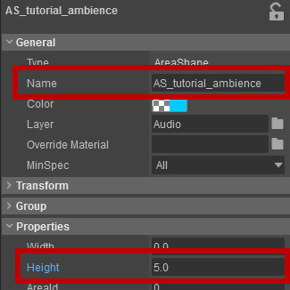
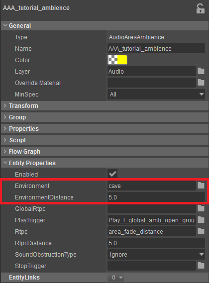
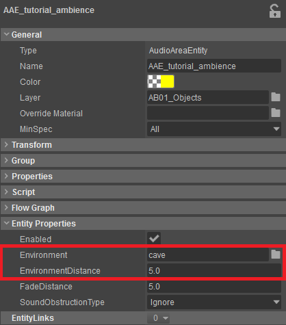
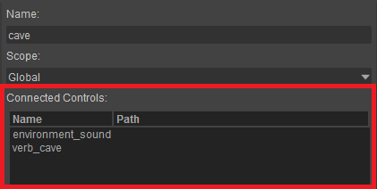

Overview
This section describes how to setup Reverbs in levels. In CRYENGINE reverbs are called Environments.
We are using the Environment audio system control which can be setup in the Audio Controls Editor.
Reverb Areas
CRYENGINE offers two Audio Entities which have an input for environments: AudioAreaAmbience and AudioAreaEntity. Both can be used to setup Reverb, but they do need to be attached to an Area Shape, Area Box, Area Sphere or Area Solid to define the area in the level.
These Entities are used to set multiple attributes that allow you to define a Play and StopTrigger for the actual ambience sound as well as the Radius around the Shape where your Reverb will start to fade in.
To make use of the AudioAreaAmbience or the AudioAreaEntity in a level, a new Shape must first be created. The Shapes that can be used with the AudioAreaAmbience and AudioAreaEntity can be found in the Create Object tool under Area. Select either an Area Box, Area Sphere, Area Shape or Area Solid.
For this tutorial we are going to place an Area Shape in a level. To do this go to the Create Object tool and select Area -> Shape.
After a Shape has been selected click in the Perspective viewport to create points which will become the corners of your Shape. When you have chosen the position of your last point of your Shape, double-click to close and complete your created Shape.
Now go to the properties of the Area Shape and give it a name and a height: 
Using the AudioAreaAmbience and AudioAreaEntity
The AudioAreaAmbience Entity is the main Entity that allows the implementation of Reverbs in a level. It is used when you are setting up Reverbs without the need to access their information in Flow Graph for advanced implementation methods.
In order to connect the AudioAreaAmbience, select the previously created Shape, then click the Targets button in the Operators section, add a target, select the empty field and select the AudioAreaAmbience entity in your level.
The AudioAreaAmbience entity will now be linked to the Shape.
For the Environment option select the audio system Environment for your Reverb Area.

AudioAreaAmbience Properties

AudioAreaEntity Properties
For a full reference of the properties for the AudioAreaAmbience Entity please refer to Audio Entities & Flow Graph Nodes.
If your character is moving towards the Area in a level, then the Reverb will be called as soon as the character enters into the maximum distance as defined by the EnvironmentDistance value in the Entity properties.
When moving closer to the shape the EnvironmentDistance value is increasing and getting closer to 1, therefore increases the Reverb and in accordance with the setup in your audio middleware.
As long as your character is within the Area Shape the EnvironmentDistance equals 1 and therefore your Reverb will play without attenuation.
The distance the AudioAreaAmbience and AudioAreaEntity is outputting is always normalized to the range of 0 to 1 from the maximum range you are setting in EnvironmentDistance. Therefore, the range of the RTPC used by your Middleware needs to be as well normalized from 0 to 1.
Active Range of the Audio Area Ambience and Audio Area Entity
It is possible to set an audio system Environment on the Audio Area Ambience without defining an audio system Trigger as PlayTrigger. However in most cases it makes sense to define both on the same Entity.
One thing you have to take into account is that the RtpcDistance on the Audio Area Ambience and the FadeDistance on the Audio Area Entity define the maximum distance at which the Entities are working.
Therefore in order for the audio system Environment values to be updated correctly for the Entities approaching and leaving the Area, the EnvironmentDistance value should not exceed the value for the RtpcDistance or FadeDistance.
In most implementation cases the EnvironmentDistance is set to be lower or equal to the RtpcDistance to create realistic ambiences and Reverb Environments.
Mapping Game Parameters to Audio System Environments
It is possible to connect a Game Parameter to an audio system Environment in the Audio Controls Editor. This can be used to control an audio system RTPC or Switch based on the location the listener is in the Level Areas.
As an example, you might want to alter the reflection/tail of a weapon sound based whether the Player is "indoors" or "outdoors". For this a Game Parameter called environment_sound with the range of 0-1 could be created in the respective middleware which falters the volume on the long outdoor gun tail sound when inside.

When connected to the audio system Environments it will fade out the weapon tail when approaching the connected Reverb Area.
This functionality gives you room for very creative use. Keep in mind that you are not restricted to the environment_sound Game Parameter. Any number of Game Parameters can be mapped to audio system Environments in order to change sounds depending of the location where an Entity is in the level.